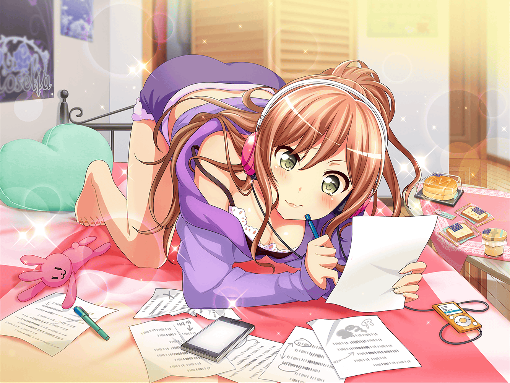

バイトからの帰り道 今井家付近
リサ
（みんな、メール見てくれたかな～）
リサ
（今度の練習の時に、
アタシが作った歌詞を持っていったら、きっと驚くよね♪）
リサ
（でも……友希那とか紗夜に
色々とチェックされるって思うと、
ちょっと緊張するかも……）
友希那
……おかえり、リサ
リサ
あれ、友希那？
なんでウチの前にいるの？
友希那
リサを待っていたのよ。
バイトお疲れさま
リサ
ありがと♪
待たせちゃってごめんね～。
……って、なんかあったっけ？
友希那
リサが歌詞を作ったってメールくれたでしょ？
それに感想が聞きたいと書いてあったから、
来てみたんだけど……
リサ
えっ！？
そ、それは、えーと……
リサ
（まさかこんなにすぐだとは
思わなかったから、心の準備が……！）
リサ
い、今じゃなきゃダメかな～？
友希那
……どうして今だとダメなの？
メールをしてきたのはリサの方だけど
リサ
い、いや～、そうなんだけど……その……
今度、Roseliaのみんながいる時にしたいなって……
友希那
…………そう。
わかったわ……
リサ
（あ……）
リサ
（アタシ、何やってるんだろう……
せっかく友希那が待っててくれたのに……）
友希那
さっき言ったことは忘れて。
じゃあ、また明日、学校で……
リサ
ま……待って、友希那！
ちょっとだけ心の準備させて！
友希那
心の準備？
リサ
う、うん……
やっぱり初めてやってみたからさ、
人に見せるのは緊張するっていうか……
リサ
しかも、相手が友希那でしょ？
結構、心臓がバクバクいっちゃってる感じで
友希那
ど、どうしてそんなに緊張する必要があるのかしら？
リサ
それは緊張するって！
だって初めて作ったんだよ……っ
リサ
みんなに見せるのは次の練習の時って思ってたから、
まだ気持ちの整理がついてないんだって
友希那
そういうことだったのね……
けど、どうして内緒に？
作詞なら、私に相談してくれてもよかったのに……
リサ
だって、驚かせたかったんだもん♪
友希那
……確かに驚いたわ
友希那
リサ１人で書き上げたの？
リサ
ううん！
いろんな人に作詞のやり方を教えてもらって、
それを参考にしてやってみたんだ
リサ
一応、『作詞コンテスト』っていうのにも送ってみたよ。
……ま、結果は見事落選だったんだけどね
友希那
そう……それは残念だったわね
リサ
……うん、すごくくやしかった。
アタシの全てを込めたのに、なんで～って！
友希那
リサ……
リサ
でもね、そのくやしいって気持ちと同じくらい、
歌詞を作るのが楽しかったんだ～
リサ
いろんな発見があってさ！
へぇ～、アタシってこんな風に考えてるのか！
……って、たくさんのことに気づけたよ☆
リサ
だからさ、
アタシ、これからも作詞の練習を続けようと思う
リサ
それで、いつか、Roseliaのみんなが『歌いたい！』って
思うような歌詞を作ってみせるよ！
リサ
……って、言っても、アタシの実力だと、
そんなのまだまだずっと先のことになっちゃうと思うけどっ。
あはは……
友希那
…………
友希那
リサ……
その日が来るのを、楽しみにしているわ
友希那
だけど、それを踏まえた上で、言わせて
友希那
Roseliaは、メロディーも歌詞も半端なものはやらないわ
リサ
うん……わかってる。
今のアタシが書いたものは、Roseliaにふさわしくない
リサ
だから、もっとたくさん書いて、
もっといい歌詞が作れるようになって
友希那達を認めさせてみせるよ！
リサ
見ててね、友希那！
いつか絶対、友希那も驚くような１曲を書いてみせるから！
リサ
それで、友希那に歌ってもらうんだ～！
もちろん、演奏はアタシ達Roseliaで！
友希那
……次に作詞をする時は、
私にも相談してくれていいのよ
リサ
う、うんっ！
ありがとー、友希那！
それじゃあ、次は遠慮なく相談させてもらおーっと☆
友希那
ふふ。
どう？ 心の準備はまだできていないのかしら？
リサ
こ、心の準備か……っ。
え、えっとー……
友希那
わかったわ。
そうしたら、次の練習の時、
みんなと一緒に見ることにするわ
リサ
ご、ごめんね、友希那……
友希那
いいのよ。
……だって、私も一番初めに作詞した時は
リサと同じだったもの。その気持ちはわかるから
リサ
そ、そうだったんだっ！？
友希那
それじゃあ、楽しみに待っているわね
リサ
うんっ！